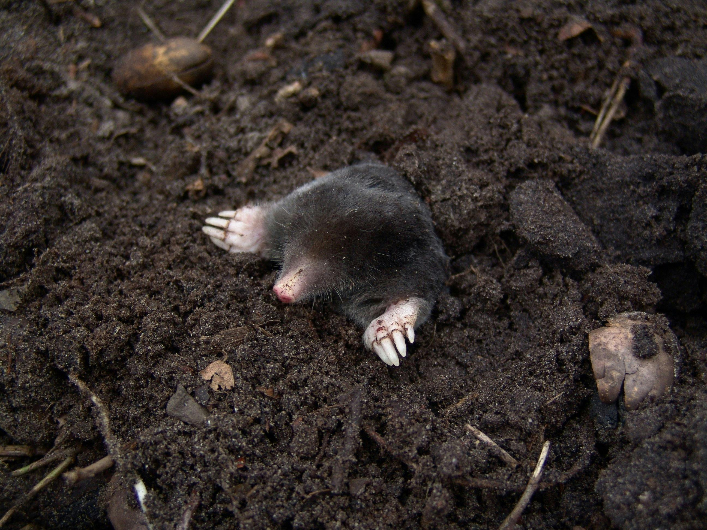
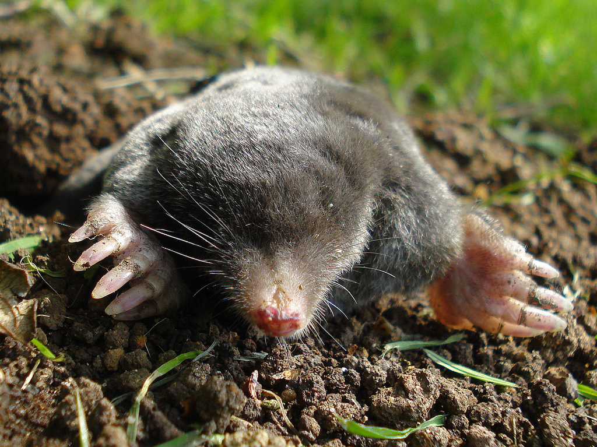
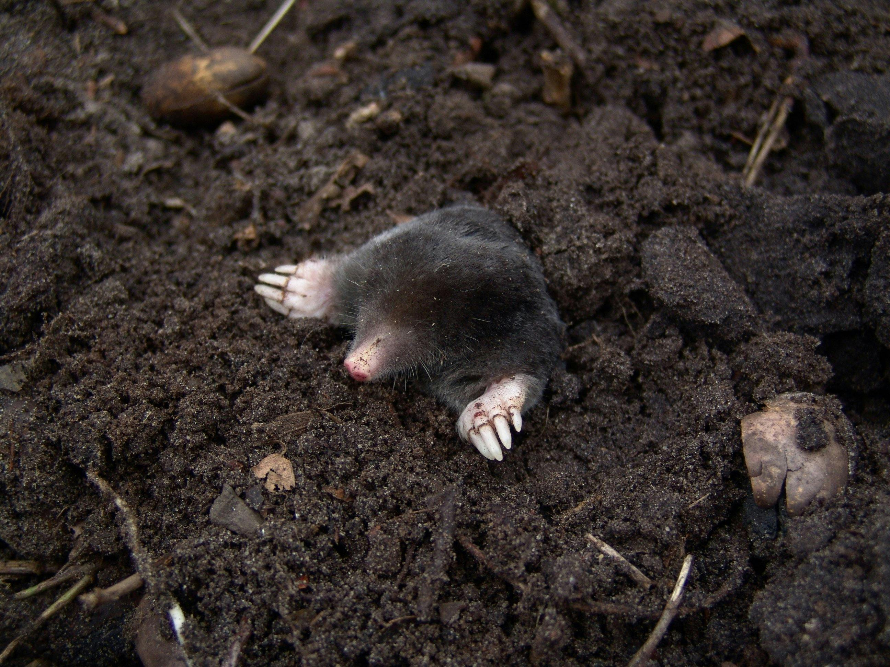
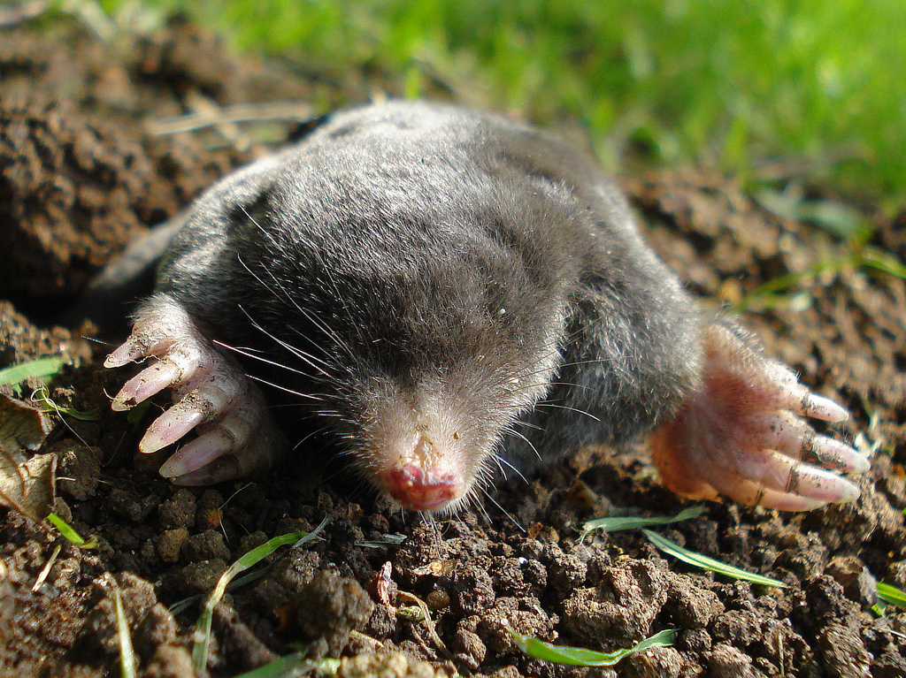

Moles
About
I am way too tired to come up with something creative so this page is just about moles!
Mole Facts
- Moles need to eat constantly. If this animal is deprived of food, in 15-16 hours it will most likely die of hunger.
- To dig a meter-long tunnel, a mole takes about 3-5 minutes, depending on the ground.
- In the USSR, moles were actively hunted because of their skins. At least several million of these animals were exterminated each year.
- The coat of these animals is notable for the fact that dirt practically does not stick to it, even wet.
More Information About Moles
Images of Moles
 


